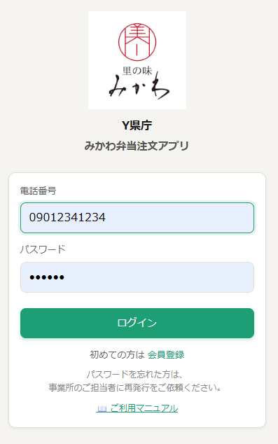
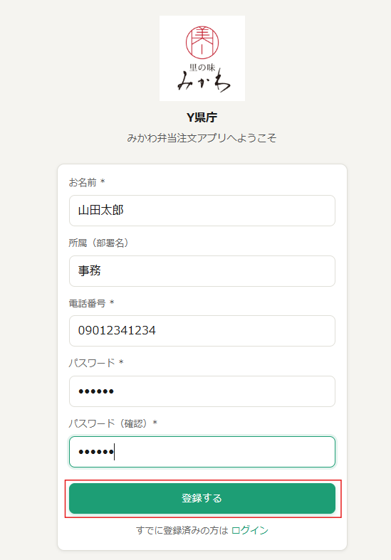
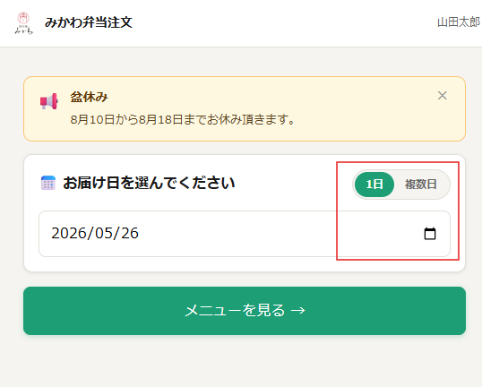
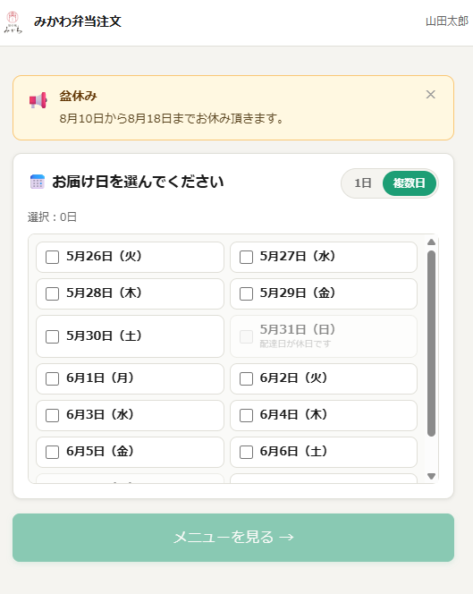
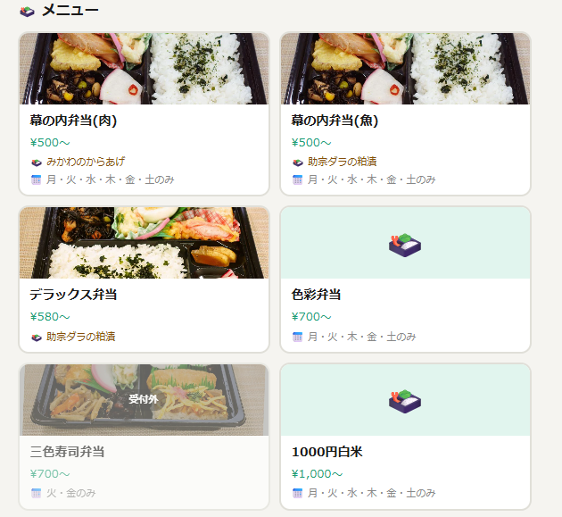
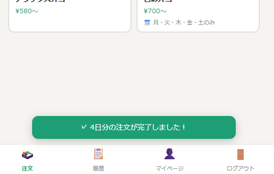
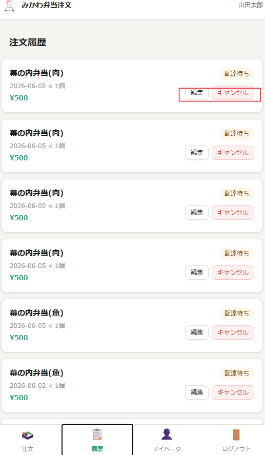
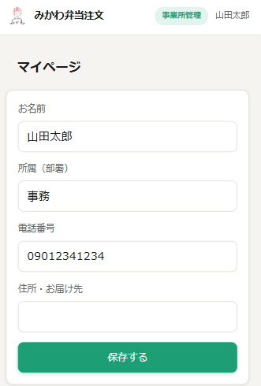
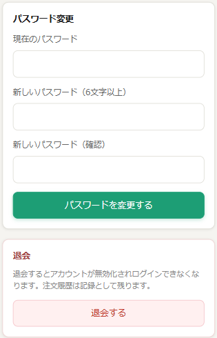

里の味
み か わ
みかわ弁当注文アプリ
利用マニュアル
ご利用の会員さま向け
発行日：2026年5月 ／ 第1.0版
はじめに
このマニュアルは、「みかわ弁当注文アプリ」をご利用いただく会員さま向けの操作手順書です。会員登録から弁当のご注文、注文履歴の確認までの一連の流れをご案内します。
ご利用にあたって
- スマートフォン・パソコンのどちらからでもご利用いただけます。
- ご注文の締切は 前営業日の15:00 までです。
- 締切を過ぎた日付の注文・変更・キャンセルはできません。
1. 会員登録
初めてご利用の方は、最初に会員登録が必要です。
手順
- ログイン画面下の 「初めての方は 会員登録」 をクリック（タップ）します。

ログイン画面（「会員登録」リンクを赤枠で示す）
- 登録フォームに以下の項目を入力します。
| 項目 | 内容 | 必須 |
|---|
| お名前 | フルネームを入力 | ✓ |
| 所属（部署名） | 例：総務課、営業部 第一課 | |
| 電話番号 | ハイフンなし／ありのどちらでも可 | ✓ |
| パスワード | お好きな文字列（6文字以上） | ✓ |
| パスワード（確認） | 上と同じものを再入力 | ✓ |

会員登録画面（入力例）
- 「登録する」 ボタンを押すと登録完了です。そのまま注文画面へ進めます。
ご注意
- 画面上部の事業所名（例：「Y県庁」）が、お勤め先と一致していることをご確認ください。
- 電話番号は、ログイン時のIDになります。お間違いのないようご入力ください。
- パスワードは忘れないように控えておいてください。
2. ログイン
2回目以降は、ログイン画面からご利用ください。
手順
- 電話番号 と パスワード を入力します。
- 「ログイン」 ボタンを押します。
ログイン画面
ログインに成功すると、注文画面（お届け日の選択画面）が表示されます。
3. 弁当を注文する
3-1. お届け日を選ぶ
注文画面では、お届け希望日を選択します。「1日」 と 「複数日」 の2つのモードがあります。
▼ 1日だけ注文する場合
- 画面右上の 「1日」 タブが選択されていることを確認します。
- カレンダーアイコンから、お届け希望日を1つ選びます。
- 「メニューを見る →」 をタップします。

1日モードの日付選択画面
▼ 複数日まとめて注文する場合
- 画面右上の 「複数日」 タブを選択します。
- 注文したい日付のチェックボックスにチェックを入れます（複数選択可）。
- 「メニューを見る →」 をタップします。

複数日モードの日付選択画面
ご注意
- グレーアウトされている日付（例：「配達日が休日です」）は選択できません。
- お休み期間（盆休み・年末年始など）は画面上部にお知らせが表示されます。
3-2. メニューを選ぶ
お届け日を選択して進むと、注文可能な弁当の一覧が表示されます。
- 注文したいお弁当を選びます。
- 個数を指定します。
- 内容を確認のうえ、注文を確定します。

メニュー選択画面
ご注意
- 一部のお弁当には 曜日制限 があります（例：「月・火・木・金・土のみ」）。表示をご確認ください。
- 価格表示の「〜」はオプションにより金額が変動することを示します。
3-3. 注文完了の確認
注文が完了すると、画面下部に確認メッセージが表示されます。
✓ 4日分の注文が完了しました！

注文完了メッセージ表示
4. 注文履歴の確認・変更・キャンセル
画面下部のメニューから 「履歴」 をタップすると、ご自身の注文履歴が確認できます。

注文履歴画面
表示される情報
- 商品名（例：幕の内弁当（肉））
- お届け日と個数
- 金額
- 状態（「配達待ち」「配達済」など）
注文の編集・キャンセル
「配達待ち」状態の注文は、前営業日の15:00まで であれば編集・キャンセルが可能です。
- 編集 ボタン：個数や商品の変更ができます。
- キャンセル ボタン：注文を取り消します。
ご注意
- 締切（前営業日15:00）を過ぎると、編集・キャンセルボタンは操作できなくなります。
- キャンセル後の復元はできません。再度ご注文ください。
5. マイページ
画面下部の 「マイページ」 から、登録情報の確認・変更ができます。

マイページ画面
パスワードの変更
マイページの 「パスワード変更」 セクションから、ご自身でパスワードを変更できます。
| 項目 | 内容 |
|---|
| 現在のパスワード | 今お使いのパスワード |
| 新しいパスワード | 新しく設定するパスワード（6文字以上） |
| 新しいパスワード（確認） | 上と同じものを再入力 |
入力後、変更ボタンを押すとパスワードが更新されます。

マイページ／パスワード変更セクション
ご注意
- 現在のパスワードが正しく入力できない場合、変更はできません。
- パスワードを忘れてしまった場合は、事業所のご担当者さままでご連絡ください（担当者による再発行が可能です）。
6. ログアウト
ご利用終了時は、画面下部の 「ログアウト」 をタップしてください。共用のパソコン・タブレットをお使いの場合は、必ずログアウトしてからお閉じください。
よくあるご質問
- パスワードを変更したい。
- マイページの「パスワード変更」セクションから、ご自身で変更できます。詳細は「5. マイページ」をご参照ください。
- パスワードを忘れてしまいました。
- 事業所のご担当者さままでご連絡ください。担当者にてパスワードの再発行が可能です。再発行された仮パスワードでログイン後、マイページからお好きなパスワードに変更してください。
- 締切後に注文を変更したい。
- システム上では変更できません。事業所のご担当者さま、または里の味みかわまで直接ご連絡ください。
- 違う事業所の画面が表示されています。
- ご利用のURLが正しいか、事業所のご担当者さまにご確認ください。
- 注文した弁当が届きません。
- 里の味みかわまで直接ご連絡ください。